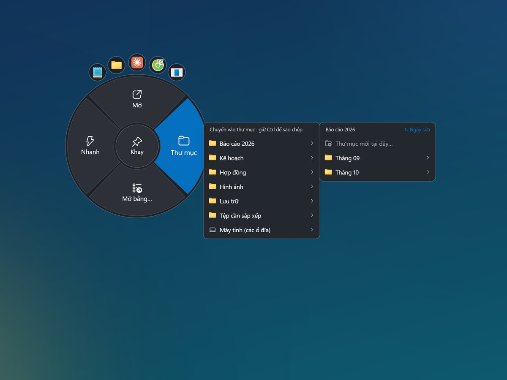
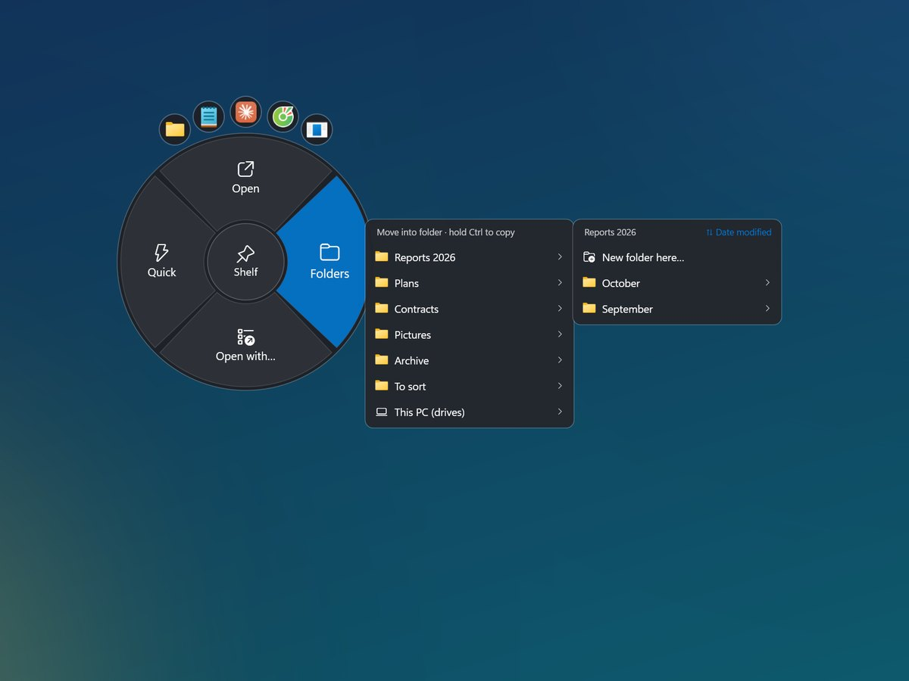
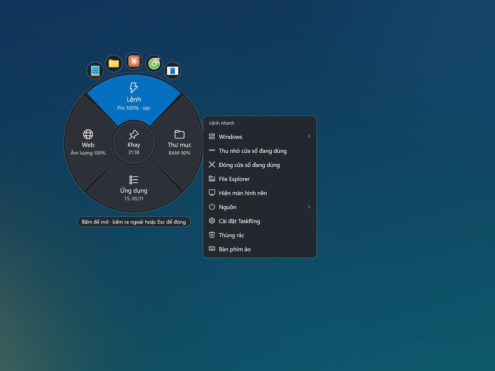
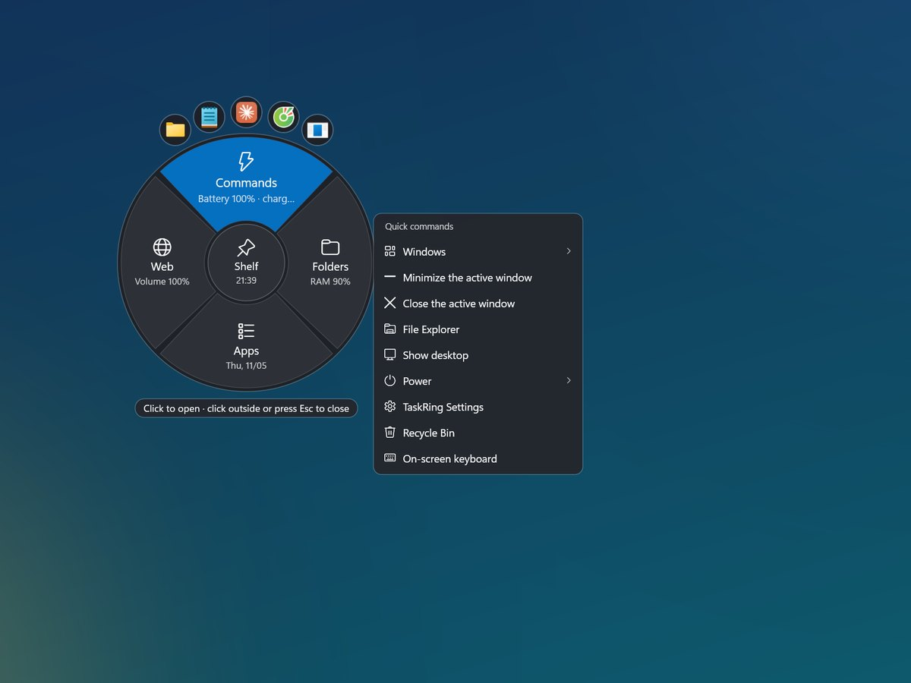
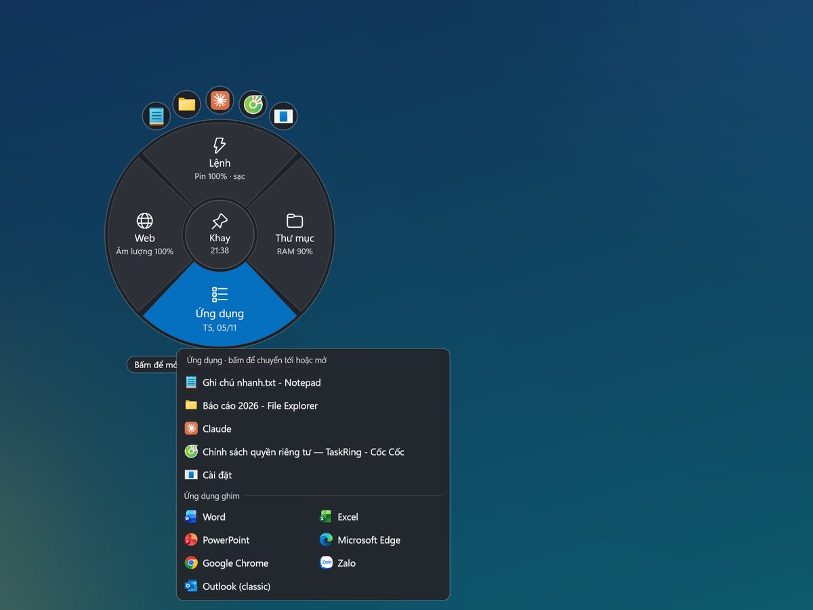
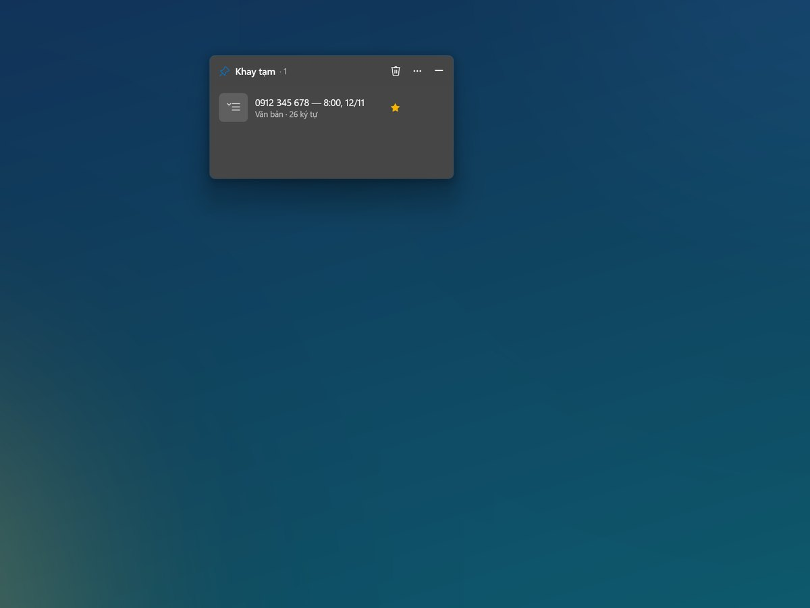
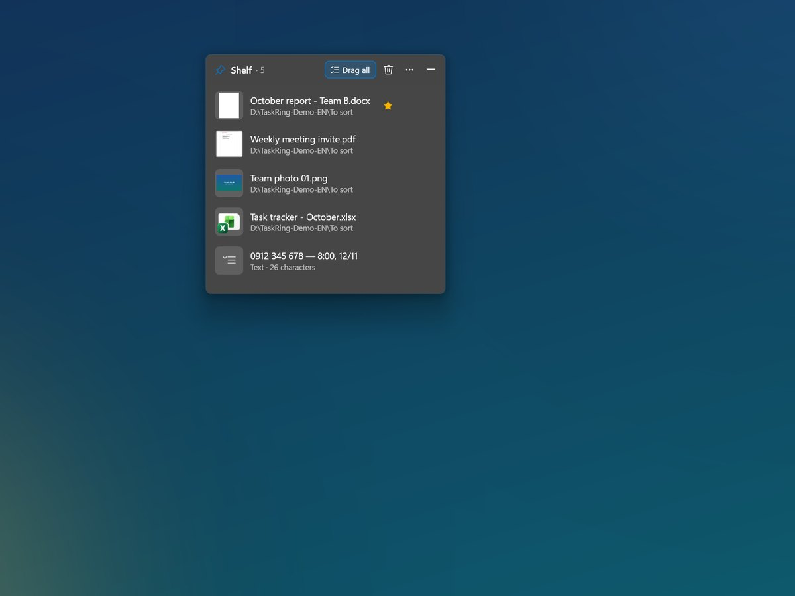
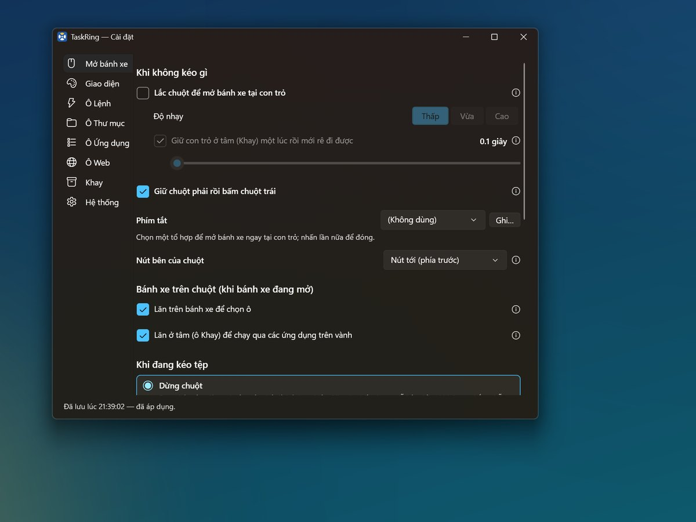
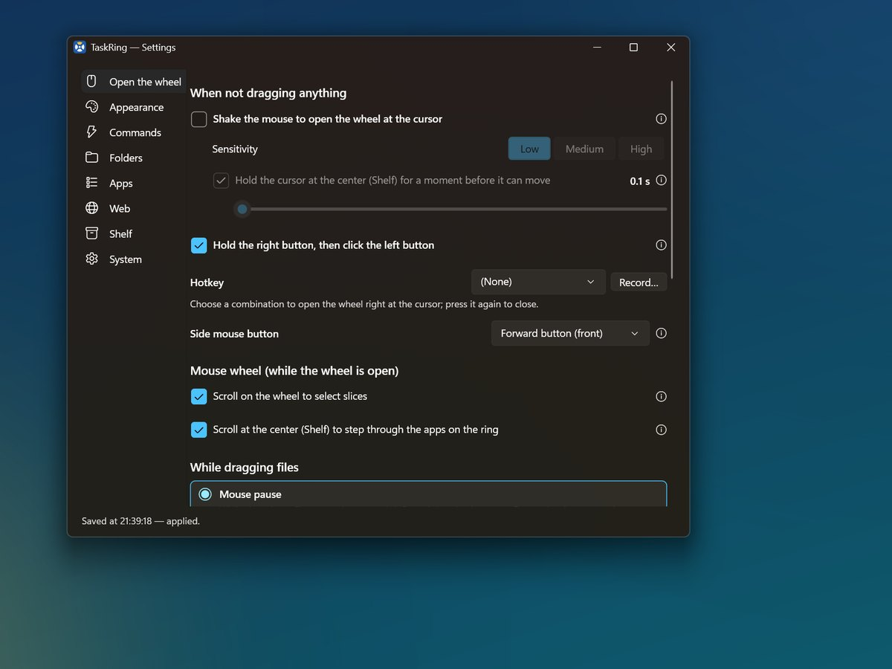

TaskRing
Thanh tác vụ tròn ngay tại con trỏ: mở nhanh ứng dụng, thư mục, trang web; kéo tệp vào bánh xe để chuyển, mở; khay tạm giữ tệp, chữ, ảnh. A round taskbar right at your cursor: launch apps, folders and web pages; drag files onto the wheel to move or open them; a temporary shelf for files, text and screenshots.
Miễn phí · Không quảng cáo · Không gửi dữ liệu đi đâu Free · No ads · No data leaves your PC
Thanh tác vụ đến chỗ con trỏThe taskbar comes to your cursor
Lắc chuột (hoặc giữ chuột phải rồi bấm chuột trái, hoặc nhấn phím tắt) là bánh xe hiện ra, kèm vành các ứng dụng đang chạy — không phải đưa chuột xuống góc màn hình nữa. Shake the mouse (or hold the right button and click the left one, or press a hotkey) and a wheel appears at the cursor, surrounded by a ring of your running apps — no more trips to the bottom of the screen.
Tính năng chínhKey features
Bánh xe ngay tại con trỏA wheel right at the cursor
Mở bằng lắc chuột, chuột phải + trái hoặc phím tắt.Open it by shaking the mouse, right + left click or a hotkey.
Vành ứng dụng đang chạyRing of running apps
Thay cho thanh tác vụ: bấm để chuyển, rê để xem ảnh cửa sổ, lăn chuột ở tâm để chạy qua từng ứng dụng.Replaces the taskbar: click to switch, hover for window previews, scroll at the center to step through apps.
Kéo tệp vào bánh xeDrag files onto the wheel
Chuyển vào thư mục, mở bằng phần mềm khác, nén ZIP, sao chép đường dẫn — có Hoàn tác khi làm nhầm.Move into a folder, open with another app, compress to ZIP or copy paths — with Undo if you change your mind.
Thư mục ghim và gần đâyPinned and recent folders
Rê chuột để xem bên trong, không cần mở Explorer.Hover to look inside without opening Explorer.
Khay tạm ở mép màn hìnhTemporary shelf
Giữ tệp, đoạn chữ, ảnh chụp màn hình để kéo sang chỗ khác khi cần.Holds files, text snippets and screenshots until you drag them somewhere else.
Lệnh nhanhQuick commands
Menu Start, tìm kiếm, File Explorer, chụp màn hình, âm lượng, bàn phím ảo, khóa máy, tắt máy…Start menu, search, File Explorer, screenshot, volume, on-screen keyboard, lock, shut down…
Ô WebWeb slice
Trang web ghim và dấu trang trình duyệt, mở chỉ một cú bấm.Pinned web pages and your browser bookmarks, one click away.
Tùy chỉnh theo ý bạnMake it yours
Cách mở, phím tắt, màu, cỡ, vị trí các ô. Tiếng Việt / tiếng Anh, sáng / tối.How it opens, hotkeys, colors, size and slice layout. English / Vietnamese, light / dark.
Riêng tưPrivate
Chạy hoàn toàn trên máy, không tài khoản, không gửi dữ liệu đi đâu.Runs entirely on your PC — no account, no data sent anywhere.
Ảnh chụp màn hìnhScreenshots



















Yêu cầu hệ thốngSystem requirements
- Windows 10 bản 1809 trở lên, hoặc Windows 11Windows 10 version 1809 or later, or Windows 11
- Máy 64-bit64-bit PC
- Có chuộtA mouse
TaskRing đang được hoàn thiện dần và có thể còn lỗi. Mong bạn thông cảm; gặp lỗi hay có góp ý, xin gửi về leduy50@gmail.com để ứng dụng ngày càng tốt hơn. TaskRing is still being improved and may have bugs. Thank you for your patience — if you run into a problem or have a suggestion, please email leduy50@gmail.com so the app keeps getting better.